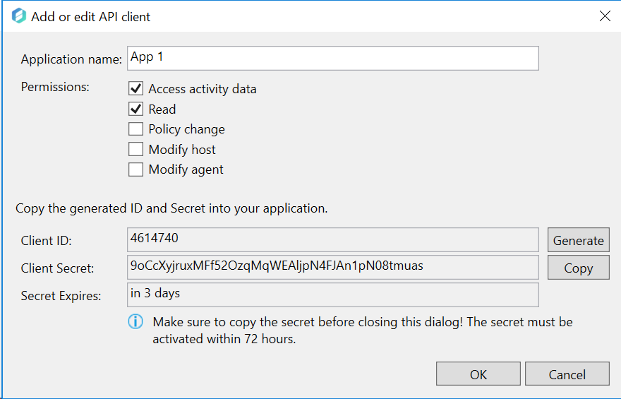
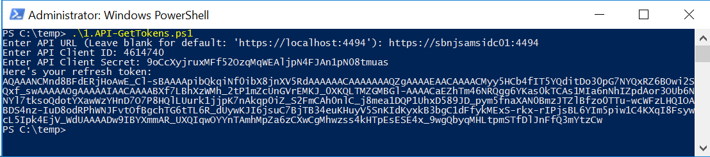
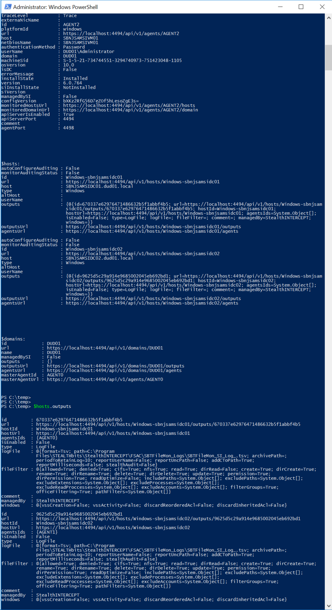

Summary: Verifying SAM API Server
Issue: It can be difficult to troubleshoot or verify that SAM API Server is working correctly when other products / components are in use. This will take SA and other components out of the picture to verify SAM API Server alone.
Instructions: I'm including 2 powershell scripts that will help troubleshoot and verify SAM API server issues...
-
1.API-GetTokens.ps1
- This script invokes SAM API to generate a refresh token. It asks for API URL, Client ID, and Client Secret. Can be used for API on local or remote agents.
- Script will output refresh token.
-
2.API-Test.ps1
- This invokes SAM API and outputs hosts and agents data from SAM API.
- Install SAM Agent.
- Enable API Server for installed agent and Add New Application for API Testing.
- Copy Client ID and Secret.
-
Execute 1.API-GetTokens.ps1
- Enter API URL ( https://localhost:4494 ), Client ID, and Client Secret.
- Execute 2.API-Test.ps1
-
Global variables are used and can be manipulated after script execution
- $agents
- $hosts
- $domains



API-GetTokens.ps1
param (
[parameter(Mandatory=$false)][string]$url
,[parameter(Mandatory=$false)][int]$clientId
,[parameter(Mandatory=$false)][string]$clientSecret
)
Set-StrictMode -Version Latest
$ErrorActionPreference = "Stop"
if(!($url)) { $url = Read-Host -Prompt "Enter API URL (Leave blank for default: 'https://localhost:4494')" }
if(!($url)) { $url = "https://localhost:4494" }
if(!($clientId)) { $clientId = Read-Host -Prompt "Enter API Client ID" }
if(!($clientSecret)) { $clientSecret = Read-Host -Prompt "Enter API Client Secret" }
if(!($clientId) -or !($clientSecret)) { throw "Client ID and Client Secret required." }
class TrustAll : System.Net.ICertificatePolicy {
[bool] CheckValidationResult([System.Net.ServicePoint] $point,
[System.Security.Cryptography.X509Certificates.X509Certificate] $cert,
[System.Net.WebRequest] $req,
[int] $problem) {
return $true
}
}
[System.Net.ServicePointManager]::CertificatePolicy = [TrustAll]::new()
function Authenticate($baseUrl, $clientId, $secret) {
$body = @{
client_id = $clientId
client_secret = $secret
grant_type = "client_credentials"
};
Invoke-RestMethod "$baseUrl/api/v1/token" -Method Post -Body $body
}
$tokens = Authenticate $url $clientId $clientSecret
Write-Host "Here's your refresh token: "
$global:refreshToken = $($tokens.refresh_token)
$global:url = $url
echo $refreshToken
2.API-Test.ps1
Set-StrictMode -Version Latest
$ErrorActionPreference = "Stop"
Write-Host "Here's your refresh token: "
echo $refreshToken
class TrustAll : System.Net.ICertificatePolicy {
[bool] CheckValidationResult([System.Net.ServicePoint] $point,
[System.Security.Cryptography.X509Certificates.X509Certificate] $cert,
[System.Net.WebRequest] $req,
[int] $problem) {
return $true
}
}
[System.Net.ServicePointManager]::CertificatePolicy = [TrustAll]::new()
function RefreshToken($baseUrl, $refreshToken) {
$body = @{
refresh_token = $refreshToken
grant_type = "refresh_token"
};
Invoke-RestMethod "$baseUrl/api/v1/token" -Method Post -Body $body
}
$tokens = RefreshToken $url $refreshToken
$headers = @{
Authorization = "Bearer $($tokens.access_token)"
};
$global:agents = Invoke-RestMethod "$url/api/v1/agents" -Headers $headers
$global:hosts = Invoke-RestMethod "$url/api/v1/hosts" -Headers $headers
$global:domains = Invoke-RestMethod "$url/api/v1/domains" -Headers $headers
echo "`n`n`$agents:"
$agents
echo "`n`n`n"
echo "`n`n`$hosts:"
$hosts
echo "`n`n`n"
echo "`n`n`$domains:"
$domains
Channel: Internal
Submitted by: Kevin Duddy
Product: SAM
Affected Versions: SAM 5.0+
Affected Module: SAM API
Dev Ticket: N/A
Resolved In Version: N/A
KB Type: How To